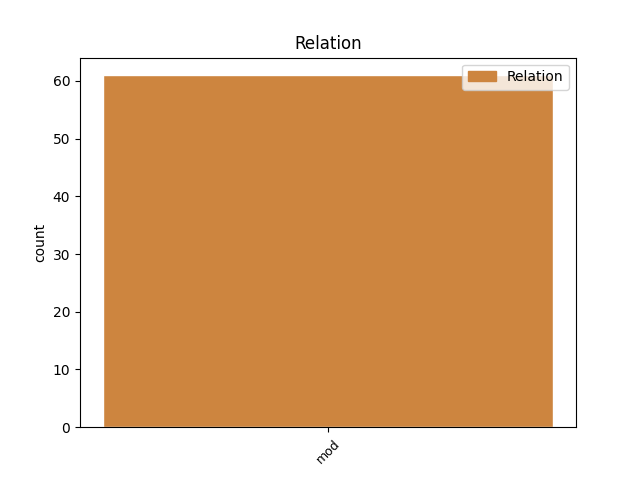
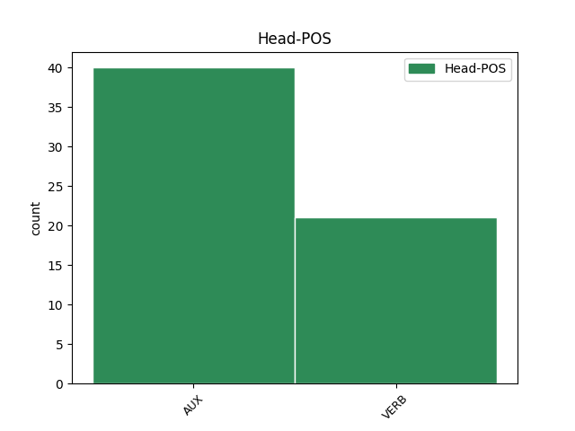
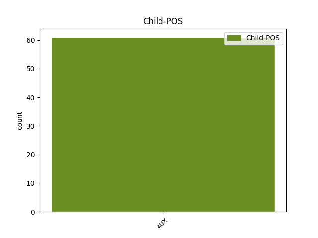

Distribution of features within this leaf



Agreement Rules sorted by frequency.
- When the dependent token is the modifer(mod) of the head token, and the dependent token is AUX.
1 Drugim _ _ _ _ 0 _ _ _
2 rečima _ _ _ _ 0 _ _ _
3 , _ _ _ _ 0 _ _ _
4 što _ _ _ _ 0 _ _ _
5 je biti AUX Var3s Mood=Ind|Number=Sing|Person=3|Tense=Pres|VerbForm=Fin 12 mod _ _
6 više _ _ _ _ 0 _ _ _
7 povezanih _ _ _ _ 0 _ _ _
8 pametnih _ _ _ _ 0 _ _ _
9 uređaja _ _ _ _ 0 _ _ _
10 , _ _ _ _ 0 _ _ _
11 to _ _ _ _ 0 _ _ _
12 je biti AUX Var3s Mood=Ind|Number=Sing|Person=3|Tense=Pres|VerbForm=Fin 0 _ _ _
13 i _ _ _ _ 0 _ _ _
14 veća _ _ _ _ 0 _ _ _
15 njihova _ _ _ _ 0 _ _ _
16 efikasnost _ _ _ _ 0 _ _ _
17 , _ _ _ _ 0 _ _ _
18 jer _ _ _ _ 0 _ _ _
19 dobijaju _ _ _ _ 0 _ _ _
20 više _ _ _ _ 0 _ _ _
21 podataka _ _ _ _ 0 _ _ _
22 o _ _ _ _ 0 _ _ _
23 svetu _ _ _ _ 0 _ _ _
24 oko _ _ _ _ 0 _ _ _
25 sebe _ _ _ _ 0 _ _ _
26 . _ _ _ _ 0 _ _ _
Disagree Examples:
1 U _ _ _ _ 0 _ _ _
2 mnogim _ _ _ _ 0 _ _ _
3 debatama _ _ _ _ 0 _ _ _
4 zaključeno _ _ _ _ 0 _ _ _
5 je _ _ _ _ 0 _ _ _
6 da _ _ _ _ 0 _ _ _
7 ustav _ _ _ _ 0 _ _ _
8 mora _ _ _ _ 0 _ _ _
9 da _ _ _ _ 0 _ _ _
10 bude biti AUX Var3s Mood=Ind|Number=Sing|Person=3|Tense=Pres|VerbForm=Fin 0 _ _ _
11 promenjen _ _ _ _ 0 _ _ _
12 , _ _ _ _ 0 _ _ _
13 čime _ _ _ _ 0 _ _ _
14 bi biti AUX Vaa3s Mood=Cnd|Number=Sing|Person=3|Tense=Past|VerbForm=Fin 10 mod _ _
15 se _ _ _ _ 0 _ _ _
16 omogućilo _ _ _ _ 0 _ _ _
17 da _ _ _ _ 0 _ _ _
18 sledećeg _ _ _ _ 0 _ _ _
19 predsednika _ _ _ _ 0 _ _ _
20 biraju _ _ _ _ 0 _ _ _
21 građani _ _ _ _ 0 _ _ _
22 , _ _ _ _ 0 _ _ _
23 a _ _ _ _ 0 _ _ _
24 ne _ _ _ _ 0 _ _ _
25 politički _ _ _ _ 0 _ _ _
26 podeljeni _ _ _ _ 0 _ _ _
27 parlament _ _ _ _ 0 _ _ _
28 . _ _ _ _ 0 _ _ _
1 Evropska _ _ _ _ 0 _ _ _
2 komisija _ _ _ _ 0 _ _ _
3 saopštila _ _ _ _ 0 _ _ _
4 je _ _ _ _ 0 _ _ _
5 da _ _ _ _ 0 _ _ _
6 želi _ _ _ _ 0 _ _ _
7 da _ _ _ _ 0 _ _ _
8 okonča okončati VERB Vmr3s Mood=Ind|Number=Sing|Person=3|Tense=Pres|VerbForm=Fin 0 _ _ _
9 pregovore _ _ _ _ 0 _ _ _
10 o _ _ _ _ 0 _ _ _
11 ulasku _ _ _ _ 0 _ _ _
12 sa _ _ _ _ 0 _ _ _
13 Hrvatskom _ _ _ _ 0 _ _ _
14 do _ _ _ _ 0 _ _ _
15 jeseni _ _ _ _ 0 _ _ _
16 2009 _ _ _ _ 0 _ _ _
17 , _ _ _ _ 0 _ _ _
18 što _ _ _ _ 0 _ _ _
19 bi biti AUX Vaa3s Mood=Cnd|Number=Sing|Person=3|Tense=Past|VerbForm=Fin 8 mod _ _
20 toj _ _ _ _ 0 _ _ _
21 zemlji _ _ _ _ 0 _ _ _
22 omogućilo _ _ _ _ 0 _ _ _
23 da _ _ _ _ 0 _ _ _
24 postane _ _ _ _ 0 _ _ _
25 član _ _ _ _ 0 _ _ _
26 EU _ _ _ _ 0 _ _ _
27 sledeće _ _ _ _ 0 _ _ _
28 godine _ _ _ _ 0 _ _ _
29 . _ _ _ _ 0 _ _ _
1 Postignut _ _ _ _ 0 _ _ _
2 je _ _ _ _ 0 _ _ _
3 tentativni _ _ _ _ 0 _ _ _
4 sporazum _ _ _ _ 0 _ _ _
5 da _ _ _ _ 0 _ _ _
6 se _ _ _ _ 0 _ _ _
7 radi raditi VERB Vmr3s Mood=Ind|Number=Sing|Person=3|Tense=Pres|VerbForm=Fin 0 _ _ _
8 na _ _ _ _ 0 _ _ _
9 rešavanju _ _ _ _ 0 _ _ _
10 praktičnih _ _ _ _ 0 _ _ _
11 poteškoća _ _ _ _ 0 _ _ _
12 , _ _ _ _ 0 _ _ _
13 što _ _ _ _ 0 _ _ _
14 bi biti AUX Vaa3s Mood=Cnd|Number=Sing|Person=3|Tense=Past|VerbForm=Fin 7 mod _ _
15 moglo _ _ _ _ 0 _ _ _
16 da _ _ _ _ 0 _ _ _
17 se _ _ _ _ 0 _ _ _
18 realizuje _ _ _ _ 0 _ _ _
19 kroz _ _ _ _ 0 _ _ _
20 post-uvoznu _ _ _ _ 0 _ _ _
21 proveru _ _ _ _ 0 _ _ _
22 u _ _ _ _ 0 _ _ _
23 slučaju _ _ _ _ 0 _ _ _
24 da _ _ _ _ 0 _ _ _
25 je _ _ _ _ 0 _ _ _
26 nedeklarisana _ _ _ _ 0 _ _ _
27 realna _ _ _ _ 0 _ _ _
28 vrednost _ _ _ _ 0 _ _ _
29 sumnjiva _ _ _ _ 0 _ _ _
30 . _ _ _ _ 0 _ _ _
1 Godišnji _ _ _ _ 0 _ _ _
2 kapacitet _ _ _ _ 0 _ _ _
3 nove _ _ _ _ 0 _ _ _
4 fabrike _ _ _ _ 0 _ _ _
5 je biti AUX Var3s Mood=Ind|Number=Sing|Person=3|Tense=Pres|VerbForm=Fin 0 _ _ _
6 otprilike _ _ _ _ 0 _ _ _
7 2 _ _ _ _ 0 _ _ _
8 milijarde _ _ _ _ 0 _ _ _
9 tableta _ _ _ _ 0 _ _ _
10 i _ _ _ _ 0 _ _ _
11 100 _ _ _ _ 0 _ _ _
12 miliona _ _ _ _ 0 _ _ _
13 kapsula _ _ _ _ 0 _ _ _
14 , _ _ _ _ 0 _ _ _
15 čime _ _ _ _ 0 _ _ _
16 bi biti AUX Vaa3s Mood=Cnd|Number=Sing|Person=3|Tense=Past|VerbForm=Fin 5 mod _ _
17 trebalo _ _ _ _ 0 _ _ _
18 da _ _ _ _ 0 _ _ _
19 se _ _ _ _ 0 _ _ _
20 udvostruči _ _ _ _ 0 _ _ _
21 ukupni _ _ _ _ 0 _ _ _
22 kapacitet _ _ _ _ 0 _ _ _
23 proizvodnje _ _ _ _ 0 _ _ _
24 u _ _ _ _ 0 _ _ _
25 toj _ _ _ _ 0 _ _ _
26 farmaceutskoj _ _ _ _ 0 _ _ _
27 kompaniji _ _ _ _ 0 _ _ _
28 . _ _ _ _ 0 _ _ _
1 On _ _ _ _ 0 _ _ _
2 je _ _ _ _ 0 _ _ _
3 dodao _ _ _ _ 0 _ _ _
4 da _ _ _ _ 0 _ _ _
5 će _ _ _ _ 0 _ _ _
6 ekonomija _ _ _ _ 0 _ _ _
7 ojačati _ _ _ _ 0 _ _ _
8 ako _ _ _ _ 0 _ _ _
9 ta _ _ _ _ 0 _ _ _
10 prepreka _ _ _ _ 0 _ _ _
11 bude biti AUX Var3s Mood=Ind|Number=Sing|Person=3|Tense=Pres|VerbForm=Fin 0 _ _ _
12 uklonjena _ _ _ _ 0 _ _ _
13 , _ _ _ _ 0 _ _ _
14 čime _ _ _ _ 0 _ _ _
15 bi biti AUX Vaa3s Mood=Cnd|Number=Sing|Person=3|Tense=Past|VerbForm=Fin 11 mod _ _
16 se _ _ _ _ 0 _ _ _
17 otvorio _ _ _ _ 0 _ _ _
18 put _ _ _ _ 0 _ _ _
19 bržem _ _ _ _ 0 _ _ _
20 napretku _ _ _ _ 0 _ _ _
21 ka _ _ _ _ 0 _ _ _
22 učlanjenju _ _ _ _ 0 _ _ _
23 u _ _ _ _ 0 _ _ _
24 EU _ _ _ _ 0 _ _ _
25 . _ _ _ _ 0 _ _ _